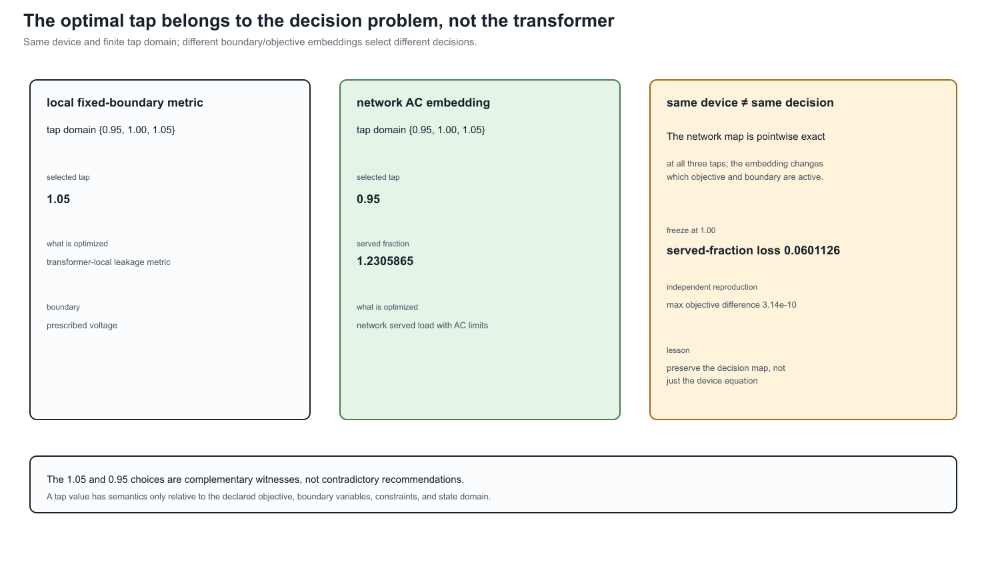

Transformer tap AC decision case
Page status: solver-backed transformer-control case with independent local reproduction; broader control and global-optimality claims remain open.
The fixed-voltage witness in the previous chapter proves that evaluating a tap start value can remove the best decision. This case takes the next step: the tap-dependent 11-terminal transformer factor is stamped into nonlinear network voltage and power-balance equations and solved with JuMP and Ipopt.
Its result is deliberately different from the preceding fixed-boundary witness: that witness minimises a transformer-local leakage-current metric at a prescribed boundary voltage and selects $1.05$. Here the tap is embedded in a network decision that maximises served load subject to AC voltage, KCL, and recovered leakage-current constraints, and the boundary voltages are variables. The network objective therefore selects $0.95$. The examples are complementary objective/boundary-condition cases, not contradictory tap recommendations.

The example deliberately retains the running transformer's WYE/WYE/DELTA structure. It is not a balanced positive-sequence transformer surrogate.
Network embedding
Transformer $x_1$ has winding set $\mathcal K_{x_1}=\{1,2,3\}$. Winding 1 is a balanced three-phase slack with an explicit neutral voltage. Winding 2 is a four-terminal WYE load bus. Its phase-to-neutral voltage is
\[V_{x_1,2,p}=U_{x_1,2,p}-U_{x_1,2,n}, \qquad p\in\{a,b,c\}.\]
The scalar decision $t_{x_1,2}$ retains the contract domain $\{0.95,1.00,1.05\}$. At a selected value, TR-XFMR-005 evaluates the complete terminal and lifted leakage-current maps
\[\mathbf I_{x_1}^{\mathrm{term}} =\mathbf Y_{x_1}(t_{x_1,2})\mathbf U_{x_1}, \qquad \mathbf I_{x_1}^{\mathrm{w,leak}} =\mathbf M_{x_1}^{\mathrm{leak}}(t_{x_1,2})\mathbf U_{x_1}.\]
Currents are positive into the transformer factor. A balanced constant-power load has per-phase direction $0.50+0.10\mathrm j$ MVA and served fraction $\alpha\geq0$. Phase power balance is therefore
\[-V_{x_1,2,p} \left(I_{x_1,2,p}^{\mathrm{term}}\right)^{*} =\alpha(0.50+0.10\mathrm j)\ \mathrm{MVA}.\]
The winding-2 neutral is not silently grounded or eliminated. Its KCL equation is
\[\sum_{c\in\{a,b,c,n\}}I_{x_1,2,c}^{\mathrm{term}}=0.\]
All three phase-to-neutral magnitudes remain in $[0.90,1.05]$ p.u., and all nine original leakage-path limits are recovered and enforced:
\[\left|I_{x_1,k,c}^{\mathrm{w,leak}}\right| \leq I_{x_1,k,c}^{\max}, \qquad k\in\mathcal K_{x_1}.\]
Open delta tertiary and its gauge
Winding 3 is an open delta. Its three terminal currents are zero, but the terminal-to-ground voltage common mode is not physically observable by the delta incidence. The implementation imposes two independent complex KCL rows; the third follows from their sum. It then fixes
\[\sum_{p\in\{a,b,c\}}U_{x_1,3,p}=0\]
only as a voltage-reference gauge. This does not add a grounding branch or change any line-to-line voltage. Separating the coordinate gauge from physical grounding is essential in a multiconductor model.
Exact discrete enumeration
The finite-domain problem is solved by enumeration. For each declared tap, the direct source contract and the parameterized target each produce a 15-variable, 30-constraint continuous nonlinear subproblem. The target does not relax, interpolate, round, or freeze the tap. Selection occurs only after all three tap-conditioned subproblems have been solved.
| Tap $t_{x_1,2}$ | Served fraction $\alpha$ | Served MW | Winding-2 voltage (p.u.) | Largest leakage loading |
|---|---|---|---|---|
| 0.95 | 1.2305865 | 1.845880 | 1.0291923 | 1.0000000 |
| 1.00 | 1.1704739 | 1.755711 | 0.9789174 | 1.0000000 |
| 1.05 | 1.1159504 | 1.673926 | 0.9333170 | 1.0000000 |
The direct source and parameterized target agree at every tap to the reported solver tolerance and both select $t_{x_1,2}=0.95$. The binding constraints are the three $2200\ \mathrm A$ winding-2 leakage-current limits; the voltage bounds remain slack.
Freezing the tap at its $1.00$ start reduces the served fraction by $0.0601126$. With three $0.50$ MW phase directions, that is a served-load loss of $0.090169$ MW. This is a network decision error, not merely a change in a transformer-local current metric.
What the certificate establishes
Certificate TR-XFMR-006 has two distinct layers of evidence:
- algebraically, direct source evaluation and parameterized factor evaluation stamp the same terminal admittance and leakage-current recovery map at each retained tap;
- numerically, the corresponding nonlinear AC subproblems return the same states, constraint activity, objectives, and selected tap to the recorded tolerances.
The first layer establishes exact compilation of the network equations. The second is reproducible evidence for this nonconvex example; an Ipopt local termination status is not a general global-optimality proof.
Maximum recorded residuals are below $10^{-7}$ A for winding-2 neutral KCL and open-tertiary KCL, and below $10^{-8}$ MVA for phase power balance. The delta common-mode gauge residual is below $10^{-8}$ p.u.
Independent numerical reproduction
TR-XFMR-007 reproduces the decision with a separate numerical engine. After receiving the same certified transformer matrices and case data, this engine uses only linear-algebra operations; it does not construct a JuMP model or call an external optimizer.
For fixed tap $t$ and served fraction $\alpha$, the seven unknown complex terminal voltages become fourteen normalized rectangular coordinates $\mathbf x$. The independent residual stacks
\[\rho(z)=\begin{bmatrix}\Re(z)\\\Im(z)\end{bmatrix}, \qquad \mathbf r_t(\mathbf x,\alpha)= \begin{bmatrix} \rho(\Delta S_a)\\ \rho(\Delta S_b)\\ \rho(\Delta S_c)\\ \rho(\Delta I_n)\\ \rho(I_{x_1,3,a})\\ \rho(I_{x_1,3,b})\\ \rho(\Delta U_3^0) \end{bmatrix} \in\mathbb R^{14},\]
where $\Delta S_p$ is phase-power mismatch, $\Delta I_n$ is winding-2 neutral KCL mismatch, and $\Delta U_3^0$ is the open-delta common-mode gauge residual. Nonzero residual blocks are scaled by fixed MVA, current, or voltage bases; the scaling is invertible and does not change their zero set.
A central finite-difference Jacobian and damped Newton iteration solve $\mathbf r_t=0$. Continuation begins at the direct linear no-load solution and increases $\alpha$ along the high-voltage branch. The search must observe a feasible point followed by a converged infeasible point before it may bisect an upper boundary. This guard is tested explicitly: a truncated scan and a case with no feasible voltage interval both return structured rejections.
| Tap | Independent $\alpha$ | JuMP/Ipopt $\alpha$ | Difference |
|---|---|---|---|
| 0.95 | 1.2305865268 | 1.2305865271 | $-2.90\times10^{-10}$ |
| 1.00 | 1.1704738807 | 1.1704738810 | $-3.14\times10^{-10}$ |
| 1.05 | 1.1159503676 | 1.1159503679 | $-2.74\times10^{-10}$ |
Both methods select $t_{x_1,2}=0.95$. Across all positions, the largest secondary-voltage difference is $1.94\times10^{-12}$ p.u. and the largest leakage-current difference is $5.18\times10^{-7}$ A. The independent boundary states have scaled equality residuals below $5.6\times10^{-11}$.
This reproduction changes the nonlinear algorithm and optimization machinery, but it deliberately shares the certified input matrices and case assembly. It is therefore an independent numerical check, not an independent data-model or transformer-primitive implementation. Continuation also certifies only the traced high-voltage branch under the recorded bracketing assumptions; it is not a general global-optimality method for nonconvex AC problems.
Run:
julia --project=experiments experiments/run_transformer_tap_ac_decision.jl
julia --project=experiments experiments/test/transformer_tap_ac_decision.jl
julia --project=experiments experiments/run_transformer_tap_ac_independent_reproduction.jl
julia --project=experiments experiments/test/transformer_tap_ac_independent_reproduction.jlBoundary and next controls
This first solver-backed case uses one ganged scalar magnitude tap, a finite domain, a balanced load direction, and tap-independent leakage, excitation, and internal grounding. It does not yet cover phase-angle regulation, independent phase taps, mechanically coupled tap decisions, automatic deadbands, or tap-dependent loss parameters in this full 11-terminal network.
The scoped companion artifact experiments/generated/transformer-control-family-witness.json now checks the control-domain boundary without overstating solver evidence. It shows that scalar magnitude, phase-angle, independent-phase, mechanically coupled, and automatic-deadband controls can all compile pointwise when the same typed control map is retained. It also shows that a tap-dependent loss parameter must be evaluated at the retained tap: freezing it at the base tap leaves a nonzero off-tap residual. Each declared map also has a small JuMP/Ipopt feasibility probe, establishing executable solver-backed control-domain evidence. The phase-angle and tap-dependent-loss maps additionally run through a two-bus AC served-current network probe, while independent-phase and mechanically coupled maps run through a three-phase uncoupled probe. The report therefore crosses the control/network boundary without presenting these fixtures as a full neutral-coupled unbalanced network OPF. Richer multiwinding domains remain open; the four-wire probe now records mutual impedance, neutral displacement, and return-current KCL explicitly, but does not replace a full multiwinding network case.
The same certificate now includes a two-scenario switching-cost ledger. It enumerates all (3^2=9) ordered tap pairs, evaluates the two locally solved AC scenario objectives, subtracts the declared switching cost, and records the selected pair. This is branch-complete for the declared finite pair domain; it is not a global certificate for the continuous nonconvex subproblems. The certificate also sweeps five switching-cost values. For this fixture the selected pair remains ((0.95,0.95)) throughout the tested range, which is a reported stability result—not an assumption that the policy is cost-invariant in other scenarios. It also records the positive intersections of the affine branch objectives, so potential policy changes can be inspected analytically before choosing a cost sweep.
The companion TR-XFMR-008 ledger keeps the same 11-terminal transformer but changes the second scenario by phase: its three constant-power directions are multiplied by the explicitly recorded vector $(1.08,0.91,1.04)$. All nine ordered tap pairs are still enumerated, and the scenario directions remain attached to their phase identities. This is the useful distinction between a phase-selective unbalanced scenario and a scalar stress factor: the former cannot be represented faithfully by silently rescaling one aggregate load. The result is finite, local solver-backed evidence; it does not claim global optimality or a general unbalanced multiwinding theorem.
The finite path extension TR-XFMR-009 evaluates three phase-selective scenarios, using the explicitly recorded scales $(1,1,1)$, $(1.02,0.98,1.01)$, and $(0.99,1.03,0.98)$, and enumerates all $3^3=27$ ordered tap triples. Its objective is the sum of the three locally solved served fractions minus a declared cost on tap movement between consecutive scenarios. This makes the temporal/control semantics explicit without pretending that a two-scenario ledger is a general multi-period OPF. The branch ledger is complete for this finite path domain; continuous global optimality, operation-count limits, and richer topology decisions remain open. The separate finite-difference reproduction also traces the nine scenario/tap boundaries and selects the same 27-branch path, with a recorded maximum net-objective difference below $10^{-8}$.
TR-XFMR-010 adds an explicit operation policy: at most one tap movement is allowed across the two scenario transitions. The ledger still enumerates all 27 triples before filtering, leaving 15 admissible branches. This ordering matters—filtering first would hide the distinction between the full decision domain and the policy-constrained feasible set.